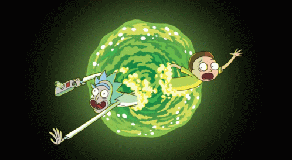

Mini-Wiki

Una Wiki dedicada a recopilar toda la información posible de los personajes sobre la popular serie animada estadounidense de Adult Swim creada por Justin Roiland y Dan Harmon.

"Te voy a decir lo que pienso de las escuelas, Es una pérdida de tiempo La escuela no es un lugar para las personas inteligentes". Rick

"A veces la ciencia es más arte que ciencia, Morty. Mucha gente no lo entiende". Rick

Todos y cada uno de los extraterrestres que aparecen en ‘Rick y Morty’ están creados en base a elementos escatológicos como genitales o heces.

"No me vas a creer, porque casi nunca pasa, pero cometí un error". Rick